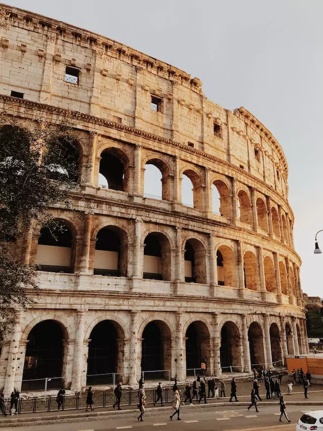
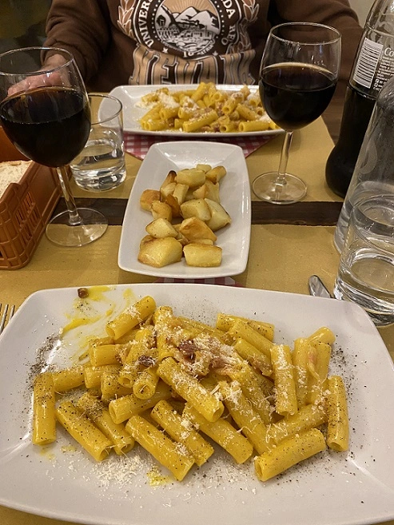

ROMA
Descubrí la eterna ciudad de Roma y su impresionante legado histórico
Roma, la capital de Italia, es una ciudad con una historia milenaria y un patrimonio cultural excepcional. Conocida como la "Ciudad Eterna", Roma te transportará a través del tiempo con sus ruinas antiguas, magníficos monumentos y vibrante vida moderna. Desde el Coliseo romano hasta la Ciudad del Vaticano, Roma ofrece una experiencia inolvidable llena de arte, arquitectura y deliciosa gastronomía.

En Roma, hay una infinidad de cosas para hacer y descubrir como explorar el Coliseo, el icónico anfiteatro romano que solía albergar espectáculos de gladiadores. También es posible visitar el Foro Romano, el antiguo centro de la vida política y social de la ciudad, donde vas a poder imaginar cómo era la vida en la antigua Roma. No podes dejar de visitar la Ciudad del Vaticano, con la impresionante Basílica de San Pedro y los Museos Vaticanos, donde vas a encontrar obras maestras como la Capilla Sixtina.
Los lugares para visitar son numerosos y fascinantes. Podes pasear por la emblemática Plaza de España y subir los escalones de la famosa Escalinata de la Plaza de España. Otra parada obligatoria es la Fontana di Trevi, una impresionante fuente barroca donde podrás lanzar una moneda y hacer un deseo. Además, puedes visitar el Panteón de Agripa, uno de los edificios mejor conservados de la antigua Roma, y maravillarte con su cúpula y su historia.

La gastronomía en Roma es una delicia para los amantes de la comida italiana. No te pierdas los auténticos platos romanos como la pasta carbonara, los bucatini all'amatriciana y la pizza romana. Además, la ciudad está llena de trattorias y restaurantes donde podrás disfrutar de la auténtica cocina italiana y probar el famoso gelato italiano. No olvides acompañar tus comidas con un buen vino italiano, ya que Italia es conocida por su excelente producción vinícola.
Moverse por la ciudad es fácil gracias a su eficiente sistema de transporte público. Podes utilizar el metro, autobuses y tranvías para desplazarte por la ciudad y llegar a todas las atracciones principales. Además, muchas de las atracciones turísticas en Roma están ubicadas en el centro histórico, lo que te permite recorrerlas a pie y disfrutar del encanto de las calles romanas. No olvides llevar un mapa o utilizar aplicaciones de transporte para planificar tu ruta y aprovechar al máximo tu tiempo en la ciudad.
Azul